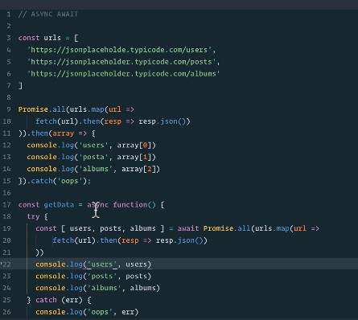

hyper text transfer protocol - a common language between the servers and the browsers(client)
The server will reply with 2 main things
The data we are sending to the server needs to be of type string - here is where the json becomes useful
is a syntax for storing and exchanging data - used to send data between machines
JSON is just data organized in a javascript object (the components still needs to be wrapped between ""),that makes it more efficient - can be read by all the languages
Json comes with its own methods -
Originally, the only way to submit some form data to a server was through the form> tag in HTML. As we have learned, it can do a POST or a GET request. With JSON you can now grab the contents of the input> in a form and submit those with JSON instead of as a form data. You can now submit to the server whenever you want without it necessarily being a form>, through AJAX.. What is AJAX you might say?
Ajax is just a way of interacting with the server without reloading the whole page, but just the piece we need - the navbar of Google, for ex, will remain still while changing the search query
it uses the fetch method to get data from the given web api (fetch(http.websiteadress.com))->the response is a promise upon which to call .json method(.then(response=>response.json())) -> .then(data=>console.log(data))
Ajax is a combination of tools that uses JSON, HTTP requests and fetch
are used for the request that take time and like an "I owe you a result"- a request to a db or to an API - useful bc js is a single stack and it would keep on hold the program otherwise
Using Promises
are the result of the fetch method
promises allow you to catch the errors and display them if the error happens before the catch method
Promise.all([promise1, promise2]).then(values=>{console.log(values)} - it's looping through the returned values of the promises that receives as parameters
A promise can be in one of the 3 possible states
await can be used only inside async function
ES6 - destructuring?
it allows us to type only the first few elements of an object/ array and then for the rest -> ...rest
(.finally(()=>console.log('extra'))) -> it can be called upon a Promise and it will run after the execution of the promise wether it resolves ot trows an error
it allows us to iterate over the promises resulted from the fetch method
ECMAScript new features list